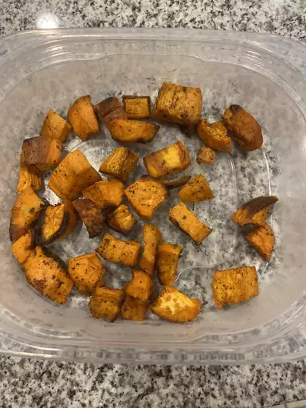

Baked Sweet Potatoes

Description
These baked sweet potato cubes, seasoned with olive oil and oregano, make a delicious side dish. The whole family enjoys eating sweet potato when I make this recipe!
Ingredients
- 2 tablespoons olive oil
- 3 large sweet potatoes
- 2 pinches dried oregano or to taste
- 2 pinches salt
- 2 pinches ground black pepper
Steps
- Gather all ingredients.
- Preheat the oven to 350 degrees F (175 degrees C). Coat the bottom of a glass or nonstick baking dish with olive oil, just enough to coat.
- 2Wash and peel sweet potatoes; cut into medium pieces.
- Place in the baking dish and stir to coat with olive oil. Sprinkle with oregano, salt, and pepper.
- Bake in the preheated oven until soft and fork-tender, about 45 minutes to 1 hour.
- Enjoy!